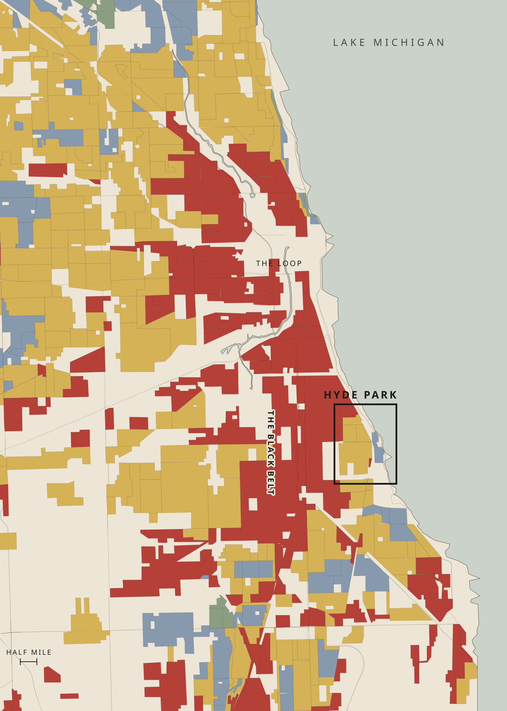
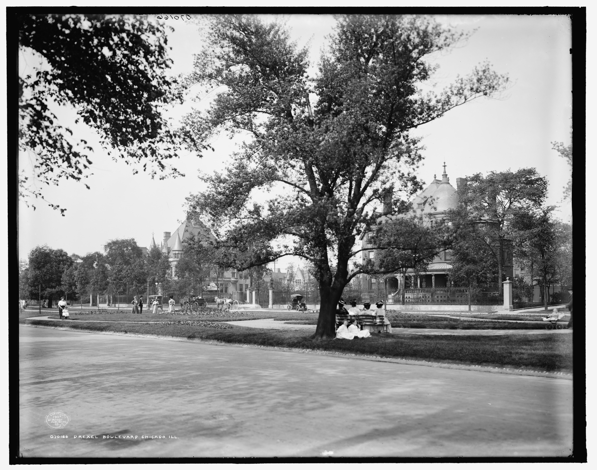
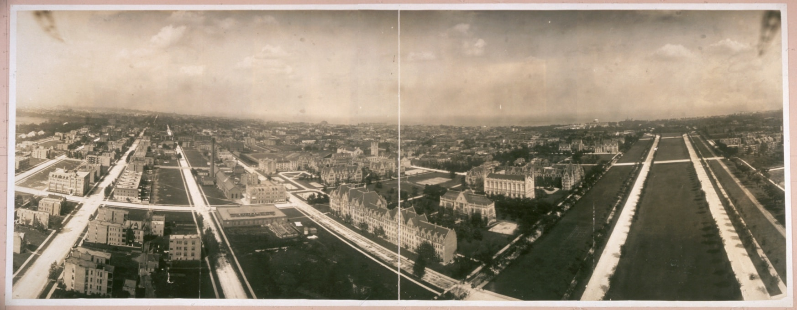
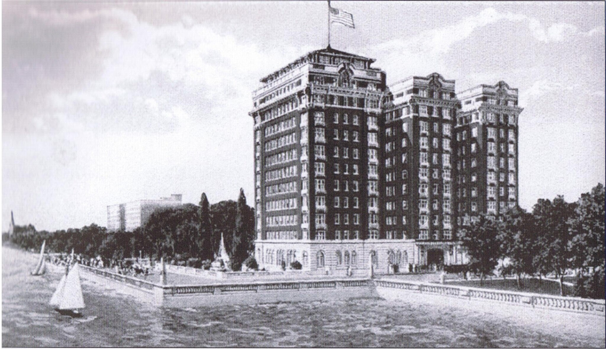

In 1908, attorney Francis Harper organized the Hyde Park Improvement Protective Club, 350 members with an openly stated goal of maintaining the color line. Members pledged to blacklist realtors who sold to Black buyers. When pressure did not work, there were bombings. Jesse Binga, whose home and office were bombed again and again, told the riot commission, "I will not run. The race is at stake and not myself."
Black homes
1917 to 1921

Federal surveyors graded every Chicago block for mortgage risk, race first on the printed form. Lenders refused ordinary mortgages on red and yellow blocks. Hyde Park was graded yellow because Black neighborhoods bordered it.


